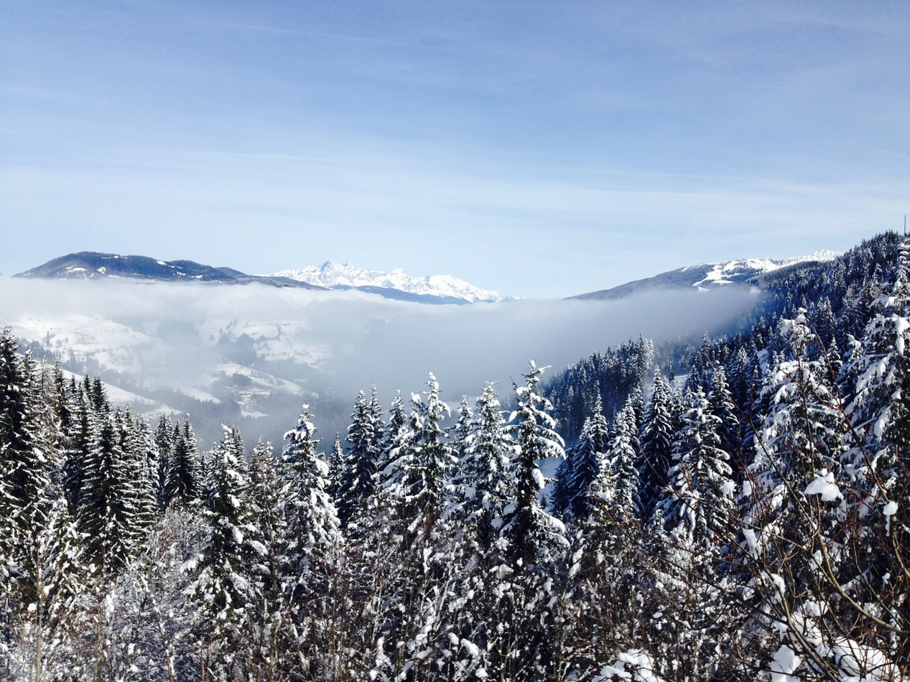

-

Snow Mountain Main Peak Trail
Miaoli County -

Momoyama Hiking Trail
Hsinchu County -

Daba Qunfeng Mountain Trail
Hsinchu County -

Wuling Four Beautiful Hiking Trail
Hsinchu County -

Snow Mountain Emerald Pool
Miaoli County -

Daba North Ridge
Hsinchu County -

Holy Ridge O-shaped Vertical Walking
Hsinchu County -

Holy ridge I type Vertical Walk
Hsinchu County -

Snow Mountain West Ridge
Hsinchu County -

Hehuan Shimenshan Trail
Nantou County -

Hehuan Main Peak Trail
Nantou County -

Yushan Main Peak Trail
Nantou County -

Snow Mountain Main East Peak Trail
Taichung County -

Chilanan Peak Trail
Nantou County -

Hehuan Xifeng Trail
Nantou County -

Yushan Qunfeng Line
Nantou County -

Maboras Cross Section
Nantou County -
Yushan Main Peak Trail
Nantou County -

Yushan Xifeng Trailt
Nantou County -

Beida Wushan Trail
Taitung County -

South Second Section
Kaohsiung County -

Hidden Peak Peak Trail in Yushan
Chiayi County -

South One Section
Kaohsiung County -
Holy ridge I type
Chiayi County